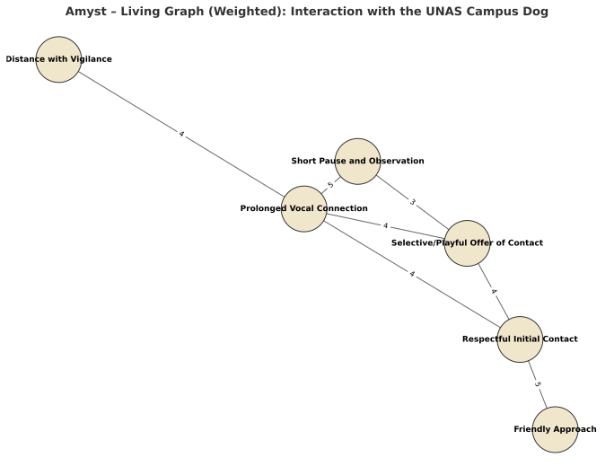

← Back
Amyst Example – Living Graph: Interaction with the UNAS Campus Dog
This diagram represents a real interaction sequence, translated into state nodes and
weighted transitions according to relational intensity (symbolic load ).
Weights range from 1 (low) to 5 (very high).

Weighted transitions: E1→E2(5), E2→E3(4), E3→E4(3), E4→E5(5), E5→E6(4);
alternative paths E5→E2(4), E5→E3(4).
Nodes (States)
E1 – Friendly Approach: Initial contact with clear recognition and no signs of tension.E2 – Respectful Initial Contact: Brief greeting; touch is accepted in a balanced way.E3 – Selective/Playful Offer of Contact: Closer interaction while maintaining autonomy over type of touch.E4 – Short Pause and Observation: Physical contact is suspended; the link stays active.E5 – Prolonged Vocal Connection: Continuous sound (“uu uu uuuuuuuu”) keeps the relational channel at a distance.E6 – Distance with Vigilance: Respectful closure; visual attention maintained until departure.
Transitions & Weights
E1 → E2 (5): Establishes initial trust — the foundation for future interactions.E2 → E3 (4): Expands the bond, allowing more physical engagement.E3 → E4 (3): Mid-interaction space management; modulates intensity.E4 → E5 (5): Decisive vocal connection sustaining flow without proximity.E5 → E6 (4): Cordial closure with protective vigilance.Alt paths: E5 → E2 (4) friendly restart; E5 → E3 (4) playful return.
Amyst Reading
Node E5 acts as a relational gateway : it can lead to closure (E6) or renewed engagement (E2/E3)
depending on the counterpart’s response. The system keeps permeable edges , absorbing tension without blockage —
a core pattern for modeling living networks.